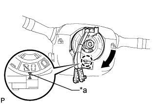

SPIRAL CABLE > INSTALLATION |
| 1. INSTALL SPIRAL WITH SENSOR CABLE SUB-ASSEMBLY |
Attach the 3 claws to install the spiral cable.
Connect the connectors to the spiral cable.
| 2. INSTALL UPPER STEERING COLUMN COVER |
Attach the claw to install the steering column upper cover.
Attach the 4 clips to install the steering column upper cover to the instrument cluster finish panel.
| 3. INSTALL LOWER STEERING COLUMN COVER |
Attach the 2 claws to install the steering column lower cover.
Install the 3 screws.
| 4. ADJUST SPIRAL WITH SENSOR CABLE SUB-ASSEMBLY |
Turn the engine switch off.
Disconnect the cable from the negative (-) battery terminal.
 |
Rotate the spiral cable with steering sensor counterclockwise slowly by hand until it feels firm.
|  |
Rotate the spiral cable with steering sensor clockwise approximately 2.5 turns to align the marks.
| *a | Mark |
| 5. INSTALL STEERING WHEEL ASSEMBLY |
Install the steering wheel assembly (Click here).